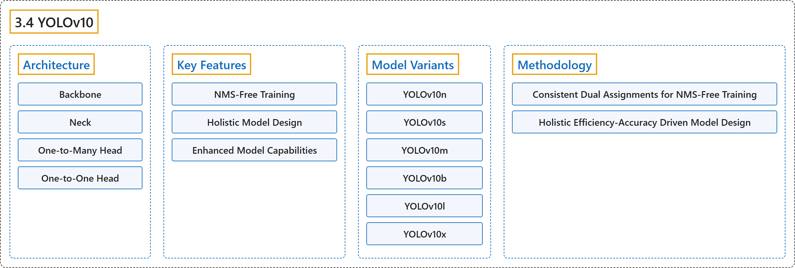

3.4 YOLOv10
Classification

Glossary
| Term | Definition | 中文翻译 | Source |
|---|---|---|---|
| 3.4 YOLOv10 YOLOv10 |
"YOLOv10, released in May 2024 and built on the Ultralytics Python package by researchers at Tsinghua University, introduces a new approach to real-time object detection, addressing both the post-processing and model architecture deficiencies found in previous YOLO versions." | YOLOv10 于 2024 年 5 月发布，由清华大学的研究人员基于 Ultralytics Python 包构建，提出了一种新的实时目标检测方法，同时解决了以往 YOLO 版本在后处理和模型架构上的不足。 | Ultralytics, n.d., "YOLOv10: Real-Time End-to-End Object Detection", para. 1 |
| Architecture 架构 |
(context) "The architecture of YOLOv10 builds upon the strengths of previous YOLO models while introducing several key innovations." | （语境）YOLOv10 的架构在以往 YOLO 模型优势的基础上，引入了若干关键创新。 | Ultralytics, n.d., "Architecture", para. 1 |
| Backbone 骨干网络 |
"Backbone: Responsible for feature extraction, the backbone in YOLOv10 uses an enhanced version of CSPNet (Cross Stage Partial Network) to improve gradient flow and reduce computational redundancy." | 骨干网络负责特征提取，YOLOv10 的骨干网络使用增强版的 CSPNet（跨阶段局部网络），以改善梯度流并减少计算冗余。 | Ultralytics, n.d., "Architecture", item 1 |
| Neck 颈部 |
"Neck: The neck is designed to aggregate features from different scales and passes them to the head." | 颈部：颈部用于聚合来自不同尺度的特征，并把它们传给检测头。 | Ultralytics, n.d., "Architecture", item 2 |
| One-to-Many Head 一对多检测头 |
"One-to-Many Head: Generates multiple predictions per object during training to provide rich supervisory signals and improve learning accuracy." | 一对多检测头训练时为每个物体生成多个预测，以提供丰富的监督信号并提高学习精度。 | Ultralytics, n.d., "Architecture", item 3 |
| One-to-One Head 一对一检测头 |
"One-to-One Head: Generates a single best prediction per object during inference to eliminate the need for NMS, thereby reducing latency and improving efficiency." | 一对一检测头推理时为每个物体只生成一个最佳预测，从而无需 NMS，降低延迟并提高效率。 | Ultralytics, n.d., "Architecture", item 4 |
| Key Features 主要特性 |
(No definition) | （无定义） | Ultralytics, n.d., "Key Features" |
| NMS-Free Training 免 NMS 训练 |
"NMS-Free Training: Utilizes consistent dual assignments to eliminate the need for NMS, reducing inference latency." | 免 NMS 训练利用一致的双重分配来消除对 NMS 的需要，降低推理延迟。 | Ultralytics, n.d., "Key Features", item 1 |
| Holistic Model Design 整体模型设计 |
"Holistic Model Design: Comprehensive optimization of various components from both efficiency and accuracy perspectives, including lightweight classification heads, spatial-channel decoupled downsampling, and rank-guided block design." | 整体模型设计指从效率和精度两个角度全面优化各个组件，包括轻量级分类头、空间-通道解耦下采样和秩引导的模块设计。 | Ultralytics, n.d., "Key Features", item 2 |
| Enhanced Model Capabilities 增强的模型能力 |
"Enhanced Model Capabilities: Incorporates large-kernel convolutions and partial self-attention modules to improve performance without significant computational cost." | 增强的模型能力指引入大核卷积和部分自注意力模块，在不显著增加计算成本的情况下提升性能。 | Ultralytics, n.d., "Key Features", item 3 |
| Model Variants 模型变体 |
(context) "YOLOv10 comes in various model scales to cater to different application needs:" | （语境）YOLOv10 提供多种模型规模，以满足不同的应用需求： | Ultralytics, n.d., "Model Variants", para. 1 |
| YOLOv10n YOLOv10n |
"YOLOv10n: Nano version for extremely resource-constrained environments." | YOLOv10n 是面向资源极其受限环境的 Nano 版本。 | Ultralytics, n.d., "Model Variants", item 1 |
| YOLOv10s YOLOv10s |
"YOLOv10s: Small version balancing speed and accuracy." | YOLOv10s 是兼顾速度与精度的 Small 版本。 | Ultralytics, n.d., "Model Variants", item 2 |
| YOLOv10m YOLOv10m |
"YOLOv10m: Medium version for general-purpose use." | YOLOv10m 是用于通用场景的 Medium 版本。 | Ultralytics, n.d., "Model Variants", item 3 |
| YOLOv10b YOLOv10b |
"YOLOv10b: Balanced version with increased width for higher accuracy." | YOLOv10b 是加大宽度以提高精度的 Balanced 版本。 | Ultralytics, n.d., "Model Variants", item 4 |
| YOLOv10l YOLOv10l |
"YOLOv10l: Large version for higher accuracy at the cost of increased computational resources." | YOLOv10l 是以更多计算资源换取更高精度的 Large 版本。 | Ultralytics, n.d., "Model Variants", item 5 |
| YOLOv10x YOLOv10x |
"YOLOv10x: Extra-large version for maximum accuracy and performance." | YOLOv10x 是追求最高精度和性能的 Extra-large 版本。 | Ultralytics, n.d., "Model Variants", item 6 |
| Methodology 方法 |
(No definition) | （无定义） | Ultralytics, n.d., "Methodology" |
| Consistent Dual Assignments for NMS-Free Training 面向免 NMS 训练的一致双重分配 |
"YOLOv10 employs dual label assignments, combining one-to-many and one-to-one strategies during training to ensure rich supervision and efficient end-to-end deployment." | YOLOv10 采用双重标签分配，即在训练中结合一对多和一对一两种策略，以确保丰富的监督和高效的端到端部署。 | Ultralytics, n.d., "Consistent Dual Assignments for NMS-Free Training", para. 1 |
| Holistic Efficiency-Accuracy Driven Model Design 效率与精度驱动的整体模型设计 |
(No definition) | （无定义） | Ultralytics, n.d., "Holistic Efficiency- Accuracy Driven Model Design" |
| Lightweight Classification Head 轻量级分类头 |
"Lightweight Classification Head: Reduces the computational overhead of the classification head by using depth-wise separable convolutions." | 轻量级分类头使用深度可分离卷积来减少分类头的计算开销。 | Ultralytics, n.d., "Efficiency Enhancements", Efficiency Enhancements, item 1 |
| Spatial-Channel Decoupled Downsampling 空间-通道解耦下采样 |
"Spatial-Channel Decoupled Downsampling: Decouples spatial reduction and channel modulation to minimize information loss and computational cost." | 空间-通道解耦下采样把空间缩减与通道调制解耦，以尽量减少信息损失和计算成本。 | Ultralytics, n.d., "Efficiency Enhancements", Efficiency Enhancements, item 2 |
| Rank-Guided Block Design 秩引导的模块设计 |
"Rank-Guided Block Design: Adapts block design based on intrinsic stage redundancy, ensuring optimal parameter utilization." | 秩引导的模块设计根据各阶段的内在冗余调整模块设计，确保参数得到最佳利用。 | Ultralytics, n.d., "Efficiency Enhancements", Efficiency Enhancements, item 3 |
| Large-Kernel Convolution 大核卷积 |
"Large-Kernel Convolution: Enlarges the receptive field to enhance feature extraction capability." | 大核卷积扩大感受野以增强特征提取能力。 | Ultralytics, n.d., "Accuracy Enhancements", Accuracy Enhancements, item 1 |
| Partial Self-Attention (PSA) 部分自注意力（PSA） |
"Partial Self-Attention (PSA): Incorporates self-attention modules to improve global representation learning with minimal overhead." | 部分自注意力（PSA）的做法是引入自注意力模块，以极小的开销改进全局表征学习。 | Ultralytics, n.d., "Accuracy Enhancements", Accuracy Enhancements, item 2 |
References
Ultralytics. (n.d.). YOLOv10: Real-Time End-to-End Object Detection. Ultralytics YOLO Docs (ultralytics 8.4.194). Retrieved October 31, 2026, from https://docs.ultralytics.com/models/yolov10/